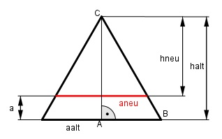

Aufgabe 208 Ein Dreikantstahl (A = 8 cm2) soll parallel zu einer Seite auf 5 cm2 abgefräst werden. Welche Frästiefe a muss gewählt werden, wenn ein regelmäßiges Dreieck erhalten bleiben soll?

Satz von Pythagoras im Dreieck ABC: aalt aalt aalt2 = (-----)2 + halt2 | -(-----)2 2 2 aalt2 aalt2 - ------ = halt2 4 3 halt2 = --- aalt2 |√ 4 aalt halt = ----- * √3 2 aalt ------ * √3 aalt * halt aalt * 2 Aalt = ------------- = ---------------------- = 2 2 aalt2 * √3 = ------------ 4 aalt2 * √3 8 = ----------- |*4 4 aalt2 * √3 = 32 |:√3 aalt2 = 18,5 |√ aalt = 4,3 cm 4,3 cm halt = --------- * √3 = 3,7 cm 2 aneu ----- * √3 aneu * hneu aneu * 2 Aneu = ------------- = -------------------- = 2 2 aneu2 * √3 = ------------ 4 aneu2 * √3 5 = ----------- |*4 4 aneu2 * √3 = 20 | : √3 aneu2 = 11,5 |√ aneu = 3,4 cm 3,4 cm hneu = --------- * √3 = 2,9 cm 2 Frästiefe a = halt – hneu = 3,7 cm – 2,9 cm = = 0,8 cm